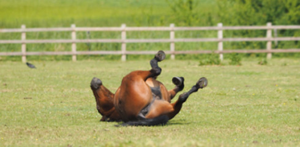
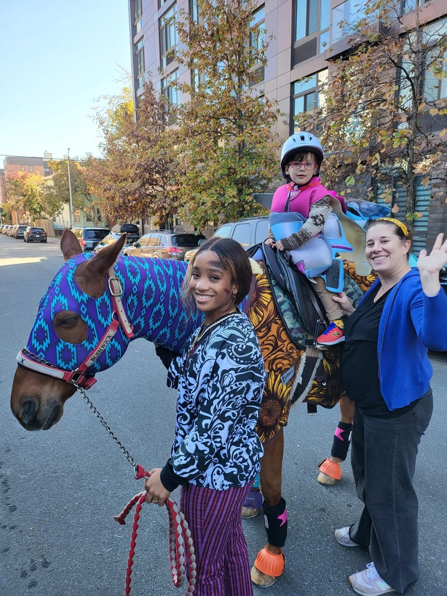
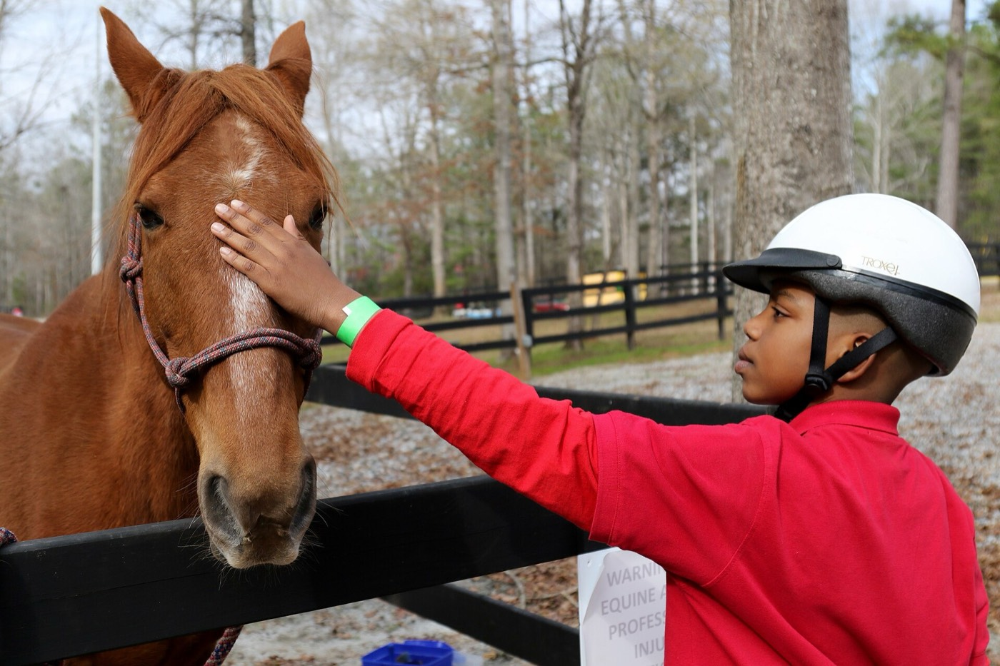
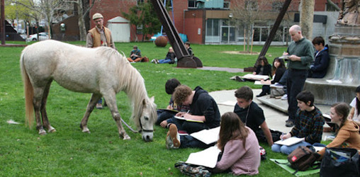

Our programs
All programs take place in Prospect Park and at Prospect Park’s Bowling Green in Brooklyn, NY and are supervised by our trained team of professionals.
We serve
Children & young adults
Inclusive programs that build empathy, confidence, life skills, and stewardship through Equine Assisted Learning (EAL).
Victims of trauma
Therapeutic interactions and support for individuals experiencing PTSD, veterans, and domestic violence survivors.
Seniors
Outdoor experiences that promote physical wellness, mental stimulation, and social connection in a calm, nurturing environment.
Horses
We provide second career horses with a healthy environment, enriching natural behaviors and social bonds.
Our programs & activities

Horseplay: turnout
Scheduled turnout times for the public to observe horses in natural herd behavior — rolling, playing, grazing, and grooming each other.
- Increases public exposure to horses
- Improves equine quality of life
- Supervised by hhi™ representatives
Get the schedule →
Intergenerational program
Bring together different age groups to enrich and benefit all involved.
- Equine-Assisted Learning & guided nature walks
- Fosters intergenerational connections & reduces isolation
Learn more →
Horse Hangouts mentoring
Bring together different age groups to enrich and benefit all involved.
- Hands-on horse care & grooming workshops
- Equine-assisted activities & guided nature walks
Learn more →
Artist live drawing
Observe and draw horses from life to enrich cultural appreciation and expand public connection.
- Casual park sketch sessions
- Workshops for schools & universities
- All skill levels welcome
Learn more →Stay connected
Get updates on horseplay turnout schedules, programs, events, and ways to help.
Sign up →